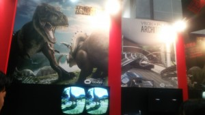
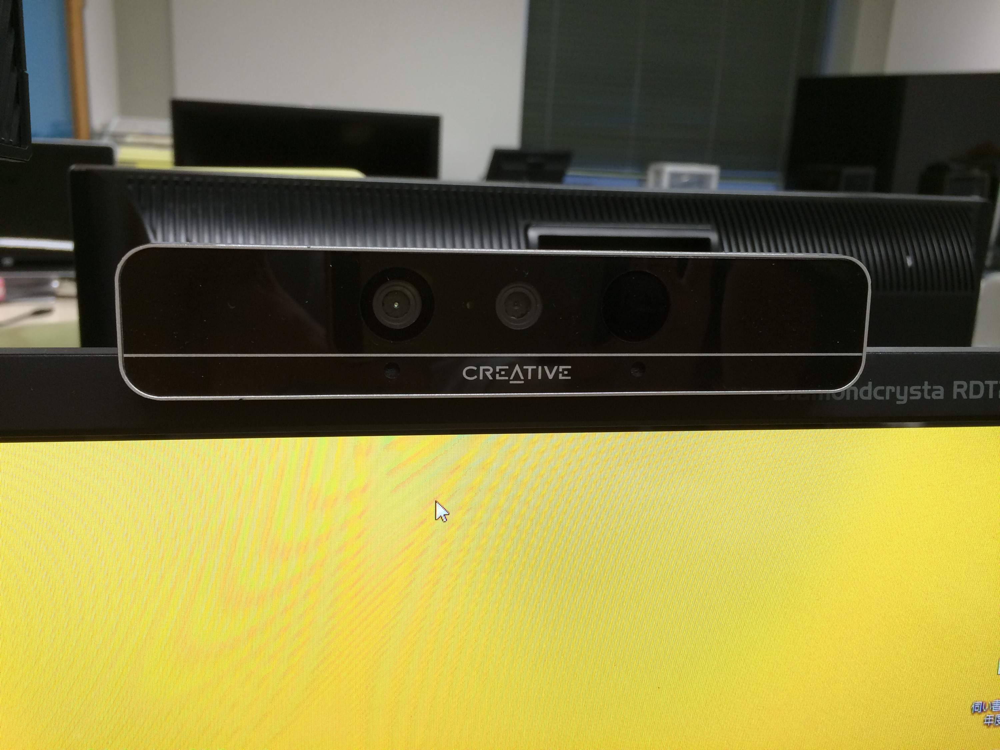

News
-
yoshiki wrote a new post, IVR展2015に行ってきました／講演から, on the site 白井セミナー 2015前期 4年 11か月前
こんにちは、神奈川工科大学 情報学部 情報メディア学科 3年の藤澤です。
6月25日(木)、東京ビッグサイトにて開催された「3D & […]

-
s1323141 wrote a new post, IVR展2015に行きました／来年VRはどうなる…!?, on the site 白井セミナー 2015前期 4年 11か月前
こんにちは，神奈川工科大学 情報学部 […]

-
Mao Furuta wrote a new post, 古田のIVRC企画調査結果, on the site 白井セミナー 2015前期 4年 11か月前
・手の形を理解してそれに応じた武器を表示するシステム→「KinectMagicKnight」ソースコードも開示されていました。http://cafe.eyln.com/p5/KinectMagicKnight/
・手の動きを理解して自然現象（噴火、天候など）を操作するシステム→自分には類似項目は見つけられなかったため新規性があると判断します。
→派生で巨人のドシンのようなゲームにしても面白いかも知れないと思いました。同じ […]
-
s1323133 wrote a new post, ソロでIVR展見学に行った, on the site 白井セミナー 2015前期 4年 11か月前
私本日IVR展に行ってまいりました。
自分がついたのが16時だったので2時間しか見学が出来ませんでしたがとても参考になる話が多い2時間だったと感じています。
私が見た企業のVR作品の中で私がオススメしたいと感じたものがありました。
いくつかあったVRのなかで積木製作さんのOculus […] 
-
Mao Furuta wrote a new post, 久々のBlog更新~出落ちビッグサイト編~, on the site 白井セミナー 2015前期 4年 11か月前
お久しぶりです。と書こうと思ったら前のやつ投稿できてないじゃないですかー！
という事で自己紹介。
チアリーダーと同姓同名でも性別は違う古田 […]

-
Mao Furuta さんのプロフィールが更新されました。 4年 11か月前
-
shiva wrote a new post, 科学のひろば ～受付のヒミツ～, on the site 覗いてみよう、白井研究室！ 4年 11か月前
みなさん、こんにちは。もうすぐ、6月が終わってしまいますね…。
さて、前回も少し触れさせて頂きましたが、ちょうど1週間前、6月20日に神奈川工科大学 主催で「科学のひろば」というイベントを開催致しました。ご来場下さった皆様、ありがとうございました(^_^)
実は、ライターも白井研究室のお手伝いとして、参加させていただきました。今回はそのお話をしたいと思います。
科学のひろば は理科好きの子供を増やそう […] 
-
s1323133 wrote a new post, 齊藤弘朗 IVRC調査結果, on the site 白井セミナー 2015前期 5年 1か月前
IVRC2015の審査方針に従って自分の作品の新規性や体験面のインパクトなどについて検討する
１３２３１３３ 齊藤弘朗
・魔方陣を書いてみたい → 特許検索ですでに多摩大学「MAHO […]

-
shirai wrote a new post, Laval Virtual 2015にて発表、ExPixelが受賞しました。, on the site Shirai Lab 5年 1か月前
2015年4月8日から12日にフランスLaval市にて開催された「 Laval Virtual – 第17回VR技術と使用法に関する国際会議」に以下の発表のため参加してまいりまし[…]
-
Ryotaro Tsuda wrote a new post, 2014年うまかったもんを振り返る, on the site 汗を流して飯が旨い 5年 5か月前
2014年うまかったものを振り返ってみました．
審査基準2014年1/1-12/31で食べたもの
実際に口にしたもののみ
今写真を見てその味を思い出すことが出来るか
あとは独断と偏見小田原 浜焼のお店にて ホタテといかとんび
小田原 かまぼこの里にて かまぼこテイスティングと地域のお茶
沼津 ギネスのかき揚げ
新百合ヶ丘 おいしいホテルのケーキセット大阪 たこ焼きミュージアム
道頓 […]
-
shirai wrote a new post, お茶の水女子大・伊藤研 訪問記, on the site Shirai Lab 7年 1か月前
今年度から芸術科学会学会誌「DiVA」の編集デスクを白井研究室で受け持つことになりました。
1月から物書きに進行管理、InDesignの特訓と「ほかの学生とは一風変わったトレーニング」を受けている
スヨンと小池ですが、このたび、プロの「女流・理系漫画家」の はやのん さんに同行して、
お茶の水女子大学 伊藤研究室を見学させていただく機会を得ました。
取材の中身を明かすわけにはいかないので写真だけでも公開。[…] -
genki wrote a new post, 日刊工業新聞取材 理系漫画家はやのんさん訪問, on the site 瞬刊少年マルマル/Manga Generator 7年 2か月前
3/28に日刊工業新聞様の方から、理系漫画家はやのんさんが瞬刊少年マルマルや研究室の取材に来てくださり、4月1日付の日刊工業新聞『キラリ研究開発』の特集に瞬刊少年マルマルが載りました！
できたマンガと記念撮影をするはやのんさん(前列右から2番目)と研究室メンバー
はやのんさんはゲームと科学を連動させた『理系漫画家』として、数々のゲーム雑誌や子供の科学雑誌等でご活躍され、今現在では日刊工業新聞の『キラリ研究開[…]

-

admin wrote a new post, プレスリリース：3Dディスプレイの新方式「2x3D」の開発に成功, on the site Shirai Lab 7年 7か月前
 2012年10月25日（木）
2012年10月25日（木）
報道関係各位・プレスリリース：神奈川工科大学 情報メディア学科 白井研究室<span style="font-size: […]
-
admin wrote a new post, 「白井研究室通信」 第25号, on the site Shirai Lab 7年 7か月前
[…]